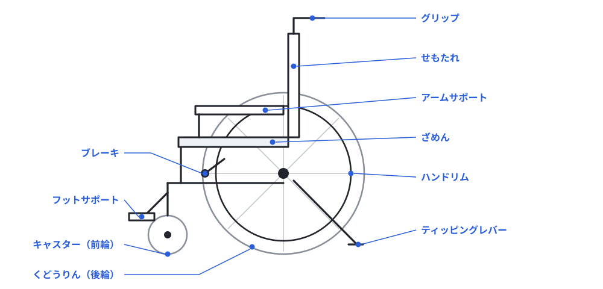

のる。おす。目を とじて歩く。この日は、体で わかることが たくさん ある。だからこそ、先に知っておくべきことが ある。
車いすの人は、まいにち たいへんな思いを しながら くらしている わけでは ない。自分の体に あった車いすを つかい、なれた道を、ふつうに進んでいく。きみが きょう 1時間のって「むずかしい」と感じるのは、なれていない からでも ある。
じゃあ、なにが ほんとうの こまりごとか。まちの ほうに りゆうが ある こまりごとだ。3センチの だんさ。きゅうな スロープ。ものが おいてある ろうか。エレベーターの ない かいだん。それは なれでは どうにも ならない。
だから きょう さがすのは「じぶんの たいへんさ」じゃない。「まちの ほうの もんだい」だ。
名前を知っていると、体験の日の説明が すっと 入る。とくに ブレーキと ティッピングレバーは かならず おぼえよう。

| じそう用 | のっている 人が 自分で ハンドリムを まわして 進む。後輪が 大きい |
|---|---|
| かいじょ用 | 後ろの 人が おす。後輪が 小さめで、車に つみやすい |
| 電動 | モーターで 走る。レバーで そうさ する。坂道でも 自分で 行ける |
| 1 | だんさに まっすぐ 正面から 向く。ななめは あぶない |
|---|---|
| 2 | 「だんさを 上がります」と 声を かける |
| 3 | グリップを 下に おしながら、ティッピングレバーを 足で ふむ。キャスター（前輪）が 上がる |
| 4 | そのまま 前に 進み、キャスターを だんの 上に そっと のせる |
| 5 | さいごに 後輪を おし上げる。もち上げるのでは なく、ころがして 上げる |
かならず うしろ向き。前向きで 下りると、のっている 人が 前に 投げ出される。うしろ向きで 後輪から そっと 下ろし、それから ティッピングレバーを ふんで キャスターを うかせたまま 下がり、しずかに 下ろす。
下り坂も うしろ向き。これも 同じ りゆう。
やってみると 気づくはず。2〜3センチの だんさでも、キャスターは ひっかかる。そして その だんさは、まちの あちこちに ある。
アイマスクを つけるのは、目の不自由な人の きもちを「わかる」ためでは ない。あんないする がわの言葉が、どれだけ たりないかを 知るためだ。2人1組で、かならず 両ほうを やってみよう。
「そこ、気をつけて」と 言っても、まったく つたわらない。じぶんの ことばが どれだけ「見えている 前ていで」できていたかが、いっきに 見える。ここが この体験の いちばんの 山場。
| スロープ | だんさを なくす さかみち。きつすぎると 車いすでは 上がれないので、かたむきに きまりが ある |
|---|---|
| 多目的トイレ | 広くて、手すりが あって、車いすの まま 入れる。ベビーベッドが ある ところも 多い |
| エレベーターの 鏡 | おくの かべの 鏡は、おしゃれの ためでは ない。車いすで 後ろ向きに 出るとき、後ろが 見えるように ついている |
| 低い ボタン・カウンター | すわったままで とどく 高さ。エレベーター、けんばいき、まどぐち |
| 車いす使用者用 駐車場 | 広くて 入口に 近い。ドアを 大きく 開けないと おりられないから 広い。ここに 止めない |
| ヘルプマーク | 赤に 白の ハートと 十字の マーク。外から 分かりにくい けれど 手助けが いる 人が つけている |
これらは「やさしさ」で できたのでは ない。当事者の人たちが声を あげて、法律や きまりを つくって、やっと できたもの。いま きみたちが かんがえている「こうしたら いいのに」も、そのつづきだ。
3回の体験が これで おわる。点字、手話、車いすと アイマスク。ばらばらの3つに 見えて、ぜんぶ おなじ問いに つながっている。
「あんしん・あんぜんな まちって、なんだろう？」 4月の きみの こたえと、いまの きみの こたえは、おなじ かな。